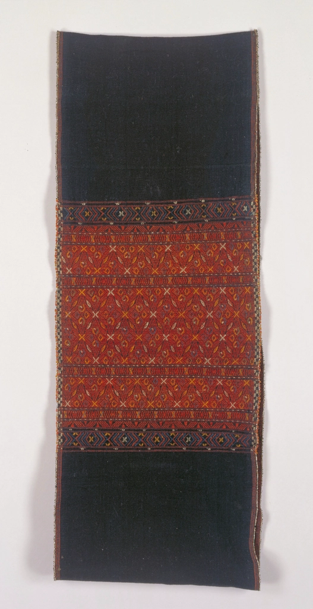
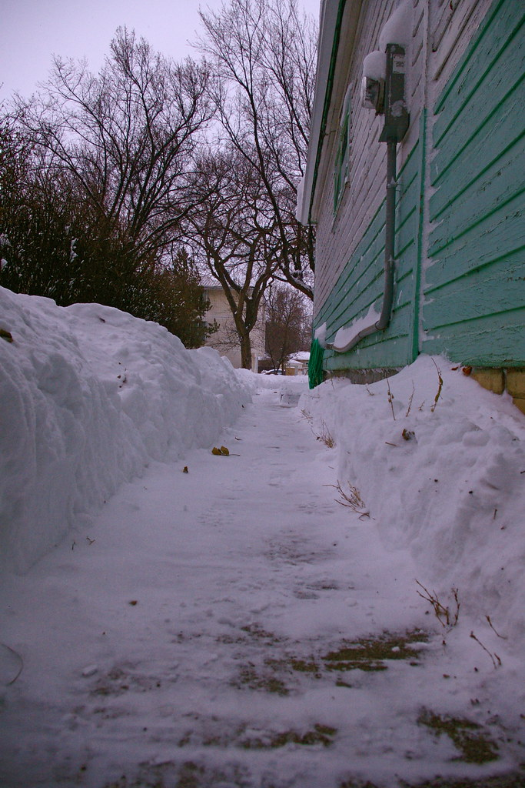
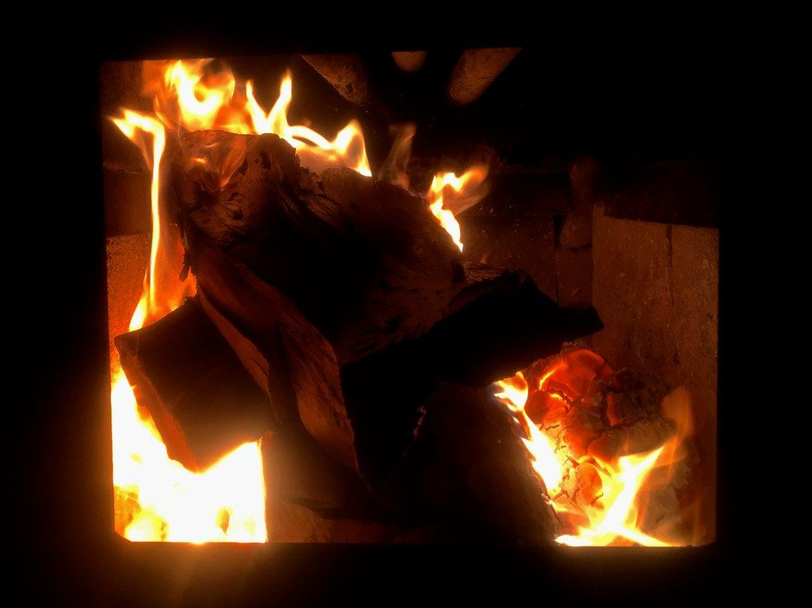

Concept
塩沢という土地と、紬という名前

Photo: イメージ（フリー素材）店名の由来
「紬」という店名の由来を、当店から明確にご案内しているわけではありません。ただ、この塩沢の地は「塩沢紬」と呼ばれる織物の産地として知られており、機織りの町ならではの記憶を、店名にそっと重ねているのかもしれません。

Photo: イメージ（フリー素材）雁木造りの街並み
塩沢駅前の一帯は、雪よけの庇が連なる「雁木造り」で統一された街並みが整備されつつあります。当店も、その新しい街並みの一角に建つ、真新しい建物の一つです。雪国ならではの知恵が息づく町を歩いた先に、当店があります。

Photo: イメージ（フリー素材）白基調・吹き抜け・薪ストーブの店内
店内は白を基調とした、木の温もりを感じる空間です。吹き抜けの高い天井が開放感を生み、冬には薪ストーブが灯ります。真新しい建物でありながら、どこか懐かしく落ち着ける雰囲気だと、ご来店のお客様からもお声をいただいています。
オーナー・スタッフの人柄
調理も接客も配膳も、忙しい店内を切り盛りしながら、キッチンからは「お待たせいたしました」という声がかかります。柔らかい雰囲気のスタッフと、厨房から気を配るオーナーの人柄が、この店の温かさをつくっています。カウンターに座る常連のお客様が、店の近くのちょっとした困りごとに手を貸しに行く――そんな話が聞こえてくるほど、地域に根づいたお店です。
最新のメニューや営業状況は Instagram（@gohan_coffee_tsumugi）でもご案内しています。